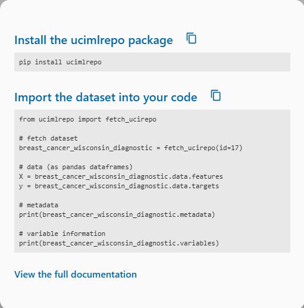
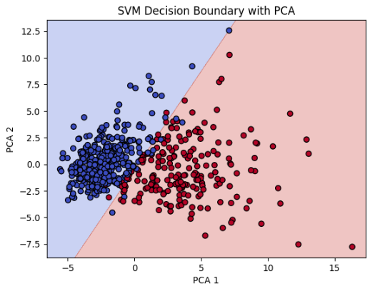
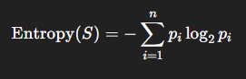
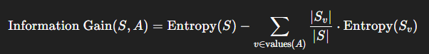
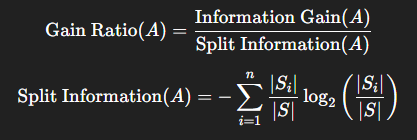
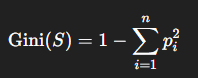
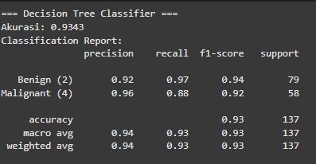
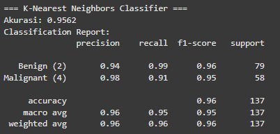
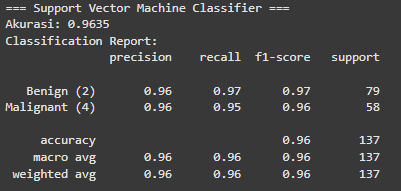

UAS PENDATA
Breast Cancer Wisconsin (Diagnostic)
Deskripsi :
Dataset Breast Cancer Wisconsin (Diagnostic) adalah dataset yang berisi hasil diagnosis sel kanker payudara, apakah termasuk ganas (malignant) atau jinak (benign), berdasarkan hasil uji laboratorium terhadap sampel sel dari aspirasi jarum halus (fine needle aspirates - FNA) pada pasien, Dataset ini digunakan secara luas dalam riset kecerdasan buatan, machine learning, dan data science sebagai contoh klasifikasi medis
Data Understanding
Dataset didapat dari sumber ini :
https://archive.ics.uci.edu/dataset/17/breast+cancer+wisconsin+diagnostic
Tujuan :
Dataset ini digunakan untuk memprediksi apakah sebuah tumor ganas (M) atau jinak (B) berdasarkan sejumlah fitur numerik yang didapat dari gambar digital sampel jaringan
Integrasi Data
untuk mengambil data agar dapat diolah, perlu untuk menginstall package yang telah disediakan oleh UCI Dataset. Instalasi dilakukan berguna untuk menarik data yang berasal dari UCI dataset agar dapat diolah. peritah untuk mengambil data dari UCI dataset dapat di lihat ketika menekan tombol import in python pada datase yang diinginkan dan ikuti perintah tersebut agar data dapat diambil dari UCI dataset. Contoh pengambilan data dari UCI dataset dapat dilihat pada gambar dan perintah berikut:

Pemanggilan Data
untuk menginstal ucimlrepo package
pip install ucimlrepopenerapan code untuk memanggil dataset
from ucimlrepo import fetch_ucirepo
# fetch dataset
breast_cancer_wisconsin_diagnostic = fetch_ucirepo(id=17)
# data (as pandas dataframes)
X = breast_cancer_wisconsin_diagnostic.data.features
y = breast_cancer_wisconsin_diagnostic.data.targets
# metadata
print(breast_cancer_wisconsin_diagnostic.metadata)
# variable information
print(breast_cancer_wisconsin_diagnostic.variables)
Eksplorasi Data
untuk memunculkan contoh data bisa menggunakan code ini :
from ucimlrepo import fetch_ucirepo
import pandas as pd
# Fetch dataset
breast_cancer_wisconsin_original = fetch_ucirepo(id=15)
# Data (as pandas dataframes)
X = breast_cancer_wisconsin_original.data.features
y = breast_cancer_wisconsin_original.data.targets
# Tampilkan metadata
print("=== Metadata ===")
print(breast_cancer_wisconsin_original.metadata)
# Tampilkan informasi variabel
print("\n=== Informasi Variabel ===")
print(breast_cancer_wisconsin_original.variables)
# Tampilkan beberapa baris pertama dari data fitur
print("\n=== Data Fitur (X) ===")
print(X.head())
# Tampilkan beberapa baris pertama dari target
print("\n=== Target (y) ===")
print(y.head())
untuk memunculkan distribusi fiur data bisa menggunakan code ini :
from ucimlrepo import fetch_ucirepo
import pandas as pd
# Fetch dataset
breast_cancer_wisconsin_original = fetch_ucirepo(id=15)
# Data (as pandas dataframes)
X = breast_cancer_wisconsin_original.data.features
y = breast_cancer_wisconsin_original.data.targets
# Tampilkan metadata
print("=== Metadata ===")
print(breast_cancer_wisconsin_original.metadata)
# Tampilkan informasi variabel
print("\n=== Informasi Variabel ===")
print(breast_cancer_wisconsin_original.variables)
# Tampilkan beberapa baris pertama dari data fitur
print("\n=== Data Fitur (X) ===")
print(X.head())
# Tampilkan beberapa baris pertama dari target
print("\n=== Target (y) ===")
print(y.head())
Struktur Dataset
fitur dan label :
Dataset terdiri dari 569 baris, 2 kelas, dan 30 fitur numerik
Fitur adalah atribut atau variabel independen dalam dataset yang digunakan untuk membuat prediksi, dalam dataset ini setiap fitur diukur menggunakan 3 bentuk statistik (Mean, SE dan Worst)
Terdapat 30 fitur numerik pada dataset ini :
1. radius_mean, radius_se, radius_worst : Jarak dari pusat ke tepi inti sel (semacam jari-jari sel) tujuannya untuk menggambarkan ukuran inti sel
2. texture_mean, texture_se, texture_worst : Deviasi standar dari level intensitas gray-scale di dalam sel tujuannya untuk menggambarkan variasi tekstur pada gambar sel
3. perimeter_mean, perimeter_se, perimeter_worst : Makna: Keliling inti sel tujuannya untuk Indikator ukuran sel yang berhubungan erat dengan radius
4. area_mean, area_se, area_worst : Luas area inti sel tujuannya untuk Mengukur besarnya inti yang tampak pada gambar
5. smoothness_mean, smoothness_se, smoothness_worst : Variasi lokal panjang radius — semakin kecil, semakin halus permukaan sel tujuannya untuk Menggambarkan kehalusan atau kasar tidaknya tepi sel
6. compactness_mean, compactness_se, compactness_worst : (Perimeter² / Area) – 1.0 tujuannya untuk Mengukur kekompakan sel. Semakin besar, bentuk semakin tidak padat
7. concavity_mean, concavity_se, concavity_worst : Derajat cekungan pada batas sel tujuannya untuk Mengukur seberapa dalam bagian-bagian dari batas sel yang masuk ke dalam
8. concave points_mean, concave points_se, concave points_worst : Jumlah titik pada batas sel yang cekung tujuannya untuk Mengindikasikan ketidakteraturan bentuk sel
9. symmetry_mean, symmetry_se, symmetry_worst : Ukuran simetri dari sel tujuannya untuk Mengukur seberapa simetris bentuk sel (tidak simetris cenderung lebih ganas)
10. fractal_dimension_mean, fractal_dimension_se, fractal_dimension_worst : Kompleksitas dari garis tepi (batas) sel tujuannya untuk Mendeteksi kerumitan bentuk sel, biasanya tumor ganas memiliki bentuk lebih kompleks
Label adalah variabel dependen atau target yang ingin diprediksi oleh model machine learning. Label merupakan output yang dipelajari oleh model dari data
terdapat 2 label pada dataset ini :
Label B berarti Benign (jinak) dan label M yang berarti Malignant (ganas)
Deteksi Missing Value
Missing value merupakan data yang hilang pada suatu dataset
#Cek jumlah missing value per kolom
print(X.isnull().sum())Output :
radius1 0
texture1 0
perimeter1 0
area1 0
smoothness1 0
compactness1 0
concavity1 0
concave_points1 0
symmetry1 0
fractal_dimension1 0
radius2 0
texture2 0
perimeter2 0
area2 0
smoothness2 0
compactness2 0
concavity2 0
concave_points2 0
symmetry2 0
fractal_dimension2 0
radius3 0
texture3 0
perimeter3 0
area3 0
smoothness3 0
compactness3 0
concavity3 0
concave_points3 0
symmetry3 0
fractal_dimension3 0
dtype: int64Deteksi Outlier
Outlier merupakan data pada dataset yang menyimpang dari data lainnya
Q1 = X.quantile(0.25)
Q3 = X.quantile(0.75)
IQR = Q3 - Q1
# Cek kondisi outlier
outliers_iqr = (X < (Q1 - 1.5 * IQR)) | (X > (Q3 + 1.5 * IQR))
# Hitung jumlah outlier per kolom
print("Jumlah outlier per fitur (IQR):")
print(outliers_iqr.sum())
# Jumlah total baris yang mengandung outlier
print(f"\nJumlah baris yang mengandung outlier (IQR): {outliers_iqr.any(axis=1).sum()}")Output :
Jumlah outlier per fitur (IQR):
radius1 14
texture1 7
perimeter1 13
area1 25
smoothness1 6
compactness1 16
concavity1 18
concave_points1 10
symmetry1 15
fractal_dimension1 15
radius2 38
texture2 20
perimeter2 38
area2 65
smoothness2 30
compactness2 28
concavity2 22
concave_points2 19
symmetry2 27
fractal_dimension2 28
radius3 17
texture3 5
perimeter3 15
area3 35
smoothness3 7
compactness3 16
concavity3 12
concave_points3 0
symmetry3 23
fractal_dimension3 24
dtype: int64
Jumlah baris yang mengandung outlier (IQR): 171Pre Processing Data
lakukan normalisasi data :
cek Missing Value :
print(X.isnull().sum().sum()) # harusnya 0
Label Encoding (ubah target jadi numerik)
from sklearn.preprocessing import LabelEncoder
le = LabelEncoder()
y_encoded = le.fit_transform(y) # menghasilkan array 0 dan 1
Feature Scaling (Standardisasi Data)
from sklearn.preprocessing import StandardScaler
scaler = StandardScaler()
X_scaled = scaler.fit_transform(X) # hasil: array NumPy yang sudah distandarkan
Hapus Outlier
from scipy.stats import zscore
import numpy as np
z_scores = np.abs(zscore(X))
mask = (z_scores < 3).all(axis=1) # hanya baris tanpa outlier
# Terapkan filter
X_clean = X[mask]
y_clean = y_encoded[mask]
Pemisahan Data (Training & Testing)
from sklearn.model_selection import train_test_split
X_train, X_test, y_train, y_test = train_test_split(
X_scaled, y_encoded, test_size=0.2, random_state=42, stratify=y_encoded)
Modelling :
Klasifikasi dengan menggunakan K-Nearest Neighbor (KNN)
Gunakan Library
from sklearn.neighbors import KNeighborsClassifier
from sklearn.metrics import accuracy_score, classification_reportInisialisasi Data
#Inisialisasi model KNN dengan k = 5
knn_model = KNeighborsClassifier(n_neighbors=5)
#coba model pada data training
knn_model.fit(X_train, y_train)Prediksi
#Prediksi data uji
y_pred_knn = knn_model.predict(X_test)Evaluasi Model
# Evaluasi performa model
print("Model: K-Nearest Neighbors (KNN)")
print("Accuracy:", accuracy_score(y_test, y_pred_knn))
print(classification_report(y_test, y_pred_knn, target_names=["Benign", "Malignant"]))Output :
Model: K-Nearest Neighbors (KNN)
Accuracy: 0.956140350877193
precision recall f1-score support
Benign 0.95 0.99 0.97 72
Malignant 0.97 0.90 0.94 42
accuracy 0.96 114
macro avg 0.96 0.95 0.95 114
weighted avg 0.96 0.96 0.96 114Klasifikasi menggunakan Support Vector Machine (SVM)
Gunakan Library SVM
from sklearn.svm import SVC
from sklearn.metrics import accuracy_score, classification_reportInisialisasi Data
# Linear kernel cocok karena datanya cukup terpisah
svm_model = SVC(kernel='linear') # Bisa diganti 'rbf' untuk nonlinear
# Latih model
svm_model.fit(X_train, y_train)Prediksi Data
y_pred_svm = svm_model.predict(X_test)Evaluasi Model
print("Model: Support Vector Machine (SVM)")
print("Accuracy:", accuracy_score(y_test, y_pred_svm))
print(classification_report(y_test, y_pred_svm, target_names=["Benign", "Malignant"]))Output :
Model: Support Vector Machine (SVM)
Accuracy: 0.9649122807017544
precision recall f1-score support
Benign 0.95 1.00 0.97 72
Malignant 1.00 0.90 0.95 42
accuracy 0.96 114
macro avg 0.97 0.95 0.96 114
weighted avg 0.97 0.96 0.96 114Visualisasi Data SVM dengan menggunakan Plot
Visualisasi Data
import matplotlib.pyplot as plt
from sklearn.decomposition import PCA
from sklearn.svm import SVC
# 1. Reduksi dimensi jadi 2 dengan PCA
pca = PCA(n_components=2)
X_pca = pca.fit_transform(X_scaled)
# 2. Split ulang data yang sudah direduksi
X_train_pca, X_test_pca, y_train_pca, y_test_pca = train_test_split(
X_pca, y_encoded, test_size=0.2, random_state=42, stratify=y_encoded)
# 3. Buat dan latih model SVM
svm = SVC(kernel='linear')
svm.fit(X_train_pca, y_train_pca)
# 4. Plot decision boundary
import numpy as np
# buat grid untuk visualisasi
h = .02 # resolusi grid
x_min, x_max = X_pca[:, 0].min() - 1, X_pca[:, 0].max() + 1
y_min, y_max = X_pca[:, 1].min() - 1, X_pca[:, 1].max() + 1
xx, yy = np.meshgrid(np.arange(x_min, x_max, h),
np.arange(y_min, y_max, h))
# prediksi semua titik dalam grid
Z = svm.predict(np.c_[xx.ravel(), yy.ravel()])
Z = Z.reshape(xx.shape)
# plot boundary dan titik data
plt.contourf(xx, yy, Z, cmap=plt.cm.coolwarm, alpha=0.3)
plt.scatter(X_pca[:, 0], X_pca[:, 1], c=y_encoded, cmap=plt.cm.coolwarm, edgecolors='k')
plt.xlabel("PCA 1")
plt.ylabel("PCA 2")
plt.title("SVM Decision Boundary with PCA")
plt.show()Output :
Evaluasi Model
disini saya menggunakan 3 jenis method untuk modelling yaitu Decission Tree, KNN dan SVM
Decission Tree :
Decission Tree (pohon keputusan) adalah metode klasifikasi atau prediksi yang menyajikan keputusan dalam bentuk pohon bercabang
Kelebihan dan Kekurangan :
Kelebihan :
Mudah dipahami (seperti logika IF-THEN), Tidak butuh normalisasi data, Bisa digunakan untuk data numerik maupun kategori
Kekurangan :
Mudah overfitting, Sensitif terhadap perubahan kecil pada data, Kurang akurat dibanding model yang lebih kompleks jika data besar
Perhitungan :
1. Hitung Entrophy

2. Information Gain

3. Gain Ratio

4. Gini Index

Penerapan
from ucimlrepo import fetch_ucirepo
import pandas as pd
from sklearn.model_selection import train_test_split
from sklearn.tree import DecisionTreeClassifier
from sklearn.preprocessing import StandardScaler
from sklearn.metrics import accuracy_score, classification_report, confusion_matrix
import matplotlib.pyplot as plt
import seaborn as sns
# Ambil dataset
dataset = fetch_ucirepo(id=15)
X = dataset.data.features.copy()
y = dataset.data.targets.copy()
# Bersihkan kolom Bare_nuclei
if X['Bare_nuclei'].dtype == 'object':
X['Bare_nuclei'] = pd.to_numeric(X['Bare_nuclei'], errors='coerce')
X = X.dropna()
y = y.loc[X.index]
# Normalisasi (opsional untuk Decision Tree, bisa di-skip)
scaler = StandardScaler()
X_scaled = pd.DataFrame(scaler.fit_transform(X), columns=X.columns)
# Split train-test
X_train, X_test, y_train, y_test = train_test_split(
X_scaled, y, test_size=0.2, random_state=42
)
# Model Decision Tree
dt_model = DecisionTreeClassifier(random_state=42)
dt_model.fit(X_train, y_train)
# Prediksi
y_pred = dt_model.predict(X_test)
# Evaluasi
print("=== Decision Tree Classifier ===")
print(f"Akurasi: {accuracy_score(y_test, y_pred):.4f}")
print("Classification Report:")
print(classification_report(y_test, y_pred, target_names=["Benign (2)", "Malignant (4)"]))
# Confusion Matrix
cm = confusion_matrix(y_test, y_pred)
plt.figure(figsize=(4, 3))
sns.heatmap(cm, annot=True, fmt='d', cmap='Blues',
xticklabels=["Benign", "Malignant"],
yticklabels=["Benign", "Malignant"])
plt.title("Confusion Matrix: Decision Tree")
plt.xlabel("Prediksi")
plt.ylabel("Aktual")
plt.tight_layout()
plt.show()
Hasil

K-Nearest Neighbors (KNN)
Langkah-langkah KNN :
Tentukan jumlah tetangga (K) yang akan digunakan untuk pertimbangan penentuan kelas (metode cross validation)
Hitung jarak dari data baru ke masing-masing data point di dataset (eulidien distance)
Ambil tetangga terdekat menurut K, kemudian hitung rata-ratanya
Penerapan
from ucimlrepo import fetch_ucirepo
import pandas as pd
from sklearn.model_selection import train_test_split
from sklearn.neighbors import KNeighborsClassifier
from sklearn.preprocessing import StandardScaler
from sklearn.metrics import accuracy_score, classification_report, confusion_matrix
import matplotlib.pyplot as plt
import seaborn as sns
# Ambil dataset
dataset = fetch_ucirepo(id=15)
X = dataset.data.features.copy()
y = dataset.data.targets.copy()
# Bersihkan kolom Bare_nuclei
if X['Bare_nuclei'].dtype == 'object':
X['Bare_nuclei'] = pd.to_numeric(X['Bare_nuclei'], errors='coerce')
X = X.dropna()
y = y.loc[X.index]
# Normalisasi (WAJIB untuk KNN)
scaler = StandardScaler()
X_scaled = pd.DataFrame(scaler.fit_transform(X), columns=X.columns)
# Split data
X_train, X_test, y_train, y_test = train_test_split(
X_scaled, y, test_size=0.2, random_state=42
)
# Model KNN (default k=5)
knn_model = KNeighborsClassifier(n_neighbors=5)
knn_model.fit(X_train, y_train)
# Prediksi
y_pred = knn_model.predict(X_test)
# Evaluasi
print("=== K-Nearest Neighbors Classifier ===")
print(f"Akurasi: {accuracy_score(y_test, y_pred):.4f}")
print("Classification Report:")
print(classification_report(y_test, y_pred, target_names=["Benign (2)", "Malignant (4)"]))
# Confusion Matrix
cm = confusion_matrix(y_test, y_pred)
plt.figure(figsize=(4, 3))
sns.heatmap(cm, annot=True, fmt='d', cmap='Blues',
xticklabels=["Benign", "Malignant"],
yticklabels=["Benign", "Malignant"])
plt.title("Confusion Matrix: KNN")
plt.xlabel("Prediksi")
plt.ylabel("Aktual")
plt.tight_layout()
plt.show()Hasil

Support Vector Machine (SVM)
Langkah-langkah SVM :
Plot titik titik
Cari Garis tengah antara 2 kelas, ambil titik tengah mwnggunakan euclidean distance
Garis pemisah tegak lurus garis penghubung A–C
Penerapan :
from ucimlrepo import fetch_ucirepo
import pandas as pd
from sklearn.model_selection import train_test_split
from sklearn.svm import SVC
from sklearn.preprocessing import StandardScaler
from sklearn.metrics import accuracy_score, classification_report, confusion_matrix
import matplotlib.pyplot as plt
import seaborn as sns
# Ambil dataset
dataset = fetch_ucirepo(id=15)
X = dataset.data.features.copy()
y = dataset.data.targets.copy()
# Bersihkan kolom Bare_nuclei
if X['Bare_nuclei'].dtype == 'object':
X['Bare_nuclei'] = pd.to_numeric(X['Bare_nuclei'], errors='coerce')
X = X.dropna()
y = y.loc[X.index]
# Normalisasi (WAJIB untuk SVM)
scaler = StandardScaler()
X_scaled = pd.DataFrame(scaler.fit_transform(X), columns=X.columns)
# Split data
X_train, X_test, y_train, y_test = train_test_split(
X_scaled, y, test_size=0.2, random_state=42
)
# Model SVM (kernel default: RBF)
svm_model = SVC(kernel='rbf', C=1.0, gamma='scale') # Bisa coba 'linear', 'poly', dll
svm_model.fit(X_train, y_train)
# Prediksi
y_pred = svm_model.predict(X_test)
# Evaluasi
print("=== Support Vector Machine Classifier ===")
print(f"Akurasi: {accuracy_score(y_test, y_pred):.4f}")
print("Classification Report:")
print(classification_report(y_test, y_pred, target_names=["Benign (2)", "Malignant (4)"]))
# Confusion Matrix
cm = confusion_matrix(y_test, y_pred)
plt.figure(figsize=(4, 3))
sns.heatmap(cm, annot=True, fmt='d', cmap='Blues',
xticklabels=["Benign", "Malignant"],
yticklabels=["Benign", "Malignant"])
plt.title("Confusion Matrix: SVM")
plt.xlabel("Prediksi")
plt.ylabel("Aktual")
plt.tight_layout()
plt.show()Hasil :
